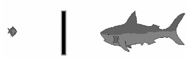

Düşünce Süreçlerinde
Davranışların Oluşumu
Beynine dışarıdan saniyede yaklaşık 400 milyar bit bilgi girer. Ancak beynin bunlardan sadece 2000 bitlik bir bilgiyi işleyebilir. Bilinçli zihnin bunlardan en az 5, en çok 9 bitlik bir bilgiyi ayırt edebiliyor. Buna 7 ± 2 dikkat aralığı deniliyor. Dikkatini aynı anda bir kaç şeye birden vermek zorunda kaldığında aklının karışması işte bu yüzdendir.
Dış uyarıcılardan gelen; ses, ışık, ısı, basınç, koku, tat vb. sinyaller duyu organlarının alıcıları tarafından duyumsanarak beynine ulaşır.
Beynine gelen saniyedeki 400 milyar bit bilgi, beş duyu kanalından oluşan algı filtrelerinden geçirilirken,algılama sonucunda; eksiltme, genelleme ve çarpıtmalara uğrar. Bu süreç sonunda bilgi 2000 bite düşer. Sonra aşamalı olarak iç filtrelerden geçirilen bilgiler bilinçli zihninin işleyebildiği 7± 2 ye düşürülür. Bu şekilde orijinal veriler her adımda biraz daha elenerek üst beynindeki prefrontal korteksin şekillendirdiği bir davranışı belirler.
Normalde her davranış bir amaca yöneliktir. Bir davranışta bulunabilmek için iç ve dış uyarıcılara gereksinim duyulur. Alıştığın düzeyin altında bir uyarıcı ile karşı karşıya kaldığında fizyolojik ve psikolojik anlamda sıkıntı yaşar, bulunduğun çevreden uzaklaşmak istersin. Çünkü yetersiz uyarılma sonucu çevreye olan uyum gücün kalmamıştır. Tam tersi, alıştığın düzeyin üzerinde bir uyarıcı ile karşı karşıya kalırsan yine aynı sıkıntıları yaşadığını fark edersin. Çünkü bu kez de uyum gücünün azaldığını anlarsın. Sonuçta uyarıcılar, sana özgü gereksinimleri karşılayamamışlardır. Çünkü frekanslarınız örtüşmemiştir. Çevreye uyum zorluğu çekmenin, stres yaşamanın nedeni budur.
Stresini azaltmak için çözüme odaklan, çözüme odaklanmayı zevkle ilişkilendir. Eğer sorunlara gereğinden fazla odaklanıyorsan bu kez; gereğinden fazla soruna odaklanmayı zihninde acı ile ilişkilendirmelisin.
Aynı durumla karşı karşıya kalan bir başkası için bu reçete işe yaramayabilir. Onun iç temsil süreci ve iç taraması seninkinden farklı ölçeklidir. Bu yüzden sen stres yaşarken o rahat davranışlar sergiliyor olabilir.
Acı ve zevk duygularının seni yönetmesine izin verme. Sistemin nasıl çalıştığını öğrenerek onları lehine kullanabilirsin. Duygularını sen yönetmezsen onlar seni yönetirler.
Acıdan kaçma ve zevke ulaşma temel bir psikoloji yasasıdır. Birçok davranışımızın, eylemlerimizin temelinde bu sistem çalışır. Yaptığımız her şeyi, ya acıdan kaçmak için ya da zevke ulaşmak için yaparız. Eğer bir duyguya ya da davranışa yeterince güçlü bir “Acı” duygusu yüklersek artık onu yapmak istemeyiz. Eğer bir duyguya ya da davranışa yoğun “Zevk” duyguları bağlarsak, onu yapmak için büyük bir istek duyarız.
Zihnimiz doğru sorulara doğru cevaplar verecek biçimde yapılanmıştır.
Bu sorular insanı uyuma yöneltir. Uyum, stresi azaltır. Fizikte bir yasa vardır; zıt kutuplar birbirlerini çeker. İnsan ilişkilerinde durum bunun tersine çalışır. İnsanlar kendi huylarına benzer huylara sahip insanlardan hoşlanır ve onları kendisine çeker. Bu yüzden birbirlerinde kendi yansımalarını görenler uyum içindedir.
Beynimize ulaşan işlenmemiş veriler; beklentilerimiz, korkularımız ve önyargılarımıza ilişkin filtrelerden geçirilir. Bu süreçte; eksiltme, çarpıtma ve genellemelere uğradıktan sonra davranışlarımız oluşur.
Bütün davranışlar olumlu bir amaca hizmet ederler.Örneğin; korkularımızın ardındaki olumlu niyet genelde güvenlik amaçlıdır. Saldırgan davranışlarımızın ardındaki olumlu niyet ise genelde korunmaya yöneliktir. Neden çok alkol kullandığını sorduğum bir yakınım, “Aileme karşı saldırgan olmamak için” diye cevaplamıştı.
Bu olumlu niyete genelde yanlış tepkiler veririz. Pek çok insanın beyni, “Alkolik bir insan her şeyi yapar” kodlaması yapmıştır. Çünkü o, niyeti davranıştan ayırmaz. Programının kodlaması doğrudan davranışa yönelik olunca, çoğu kez istenmeyen sonuçlar ortaya çıkar. Ancak beynini geliştirmiş insanlar program düzeltmesi yaparak davranışı niyetten ayırabiliyorlar. Böylece doğru davranış, doğru anlama ve doğru tepkiler; hayatın her alanına olumluluk olarak yansır.
Beynimize ulaşan veriler algı filtrelerinden geçerken, temsil sistemlerine bağlı iç süreçler;Eksiltme, Çarpıtma ve Genellemelere nasıl uğratılıyor?
Bunları niçin ve nasıl yapıyoruz ona bakalım.
Eksiltme Süreci: Genellikle kısa ve öz olmaya çalışırız. Bizim bildiğimiz şeyleri karşımızdaki kişinin de bildiğini varsaydığımızdan iletişim veya algılama sorunları yaşarız. Düşünmek, konuşmaktan hızlıdır. Çünkü konuşma mekanik hızda, düşünme ise mekanik hızdan çok daha büyük bir hızda gerçekleşir. Hızlı okumanın tercih edilme nedeni de budur.
Düşündüğümüz her şeyi dile getirmeye kalkınca da sıkıcı birisi oluruz. Bu nedenle bazen bir şeyi anlatırken, konuşmanın büyük bölümünü atlayarak bilgiyi aktarırız. Olabildiğince kısa ve öz bilgilendirmek isteriz. Bunu yaparken de doğal olarak yaptığımız eksiltmeler; karşımızdaki bireyin duyu kanallarından geçerken de sürdüğünden, bilgi artık özgün değildir.
Çarpıtma Süreci: Bilgiyi kolaylık olsun diye kısa ve öz vermeye çalışırken, ister istemez anlamı çarpıtmış oluruz. Kulaktan kulağa telefon oyununda olduğu gibi... Oyunu başlatan ilk kişinin söylediği bir cümle, son kişiye geldiğinde tamamen farklı bir anlama dönüşür değil mi?
Eksiltme ve çarpıtma sonucunda karşımızdaki kişi bıraktığımız boşlukları kendi algı filtrelerine göre doldurur. Duyusal verilerimizi hatalar içinde yorumladığımızdan tepkilerimizi de buna göre veririz. Ancak bilinçaltı zihin şakadan anlamaz. Her veriyi olduğu gibi kabul eder. Günü geldiğinde ona sadık biçimde tepkiler oluşturur. Bu yüzden tepkilerimizin büyük bölümünü bilinçaltı içsel deneyimlerimizle, kalan bölümünü de dışsal verilerin yorumuyla oluştururuz.
Genelleme Süreci: Sözü uzatmamak için yapılan genellemeler yargıya dönüştüğünde yanılgılar da artar. Genelleme yapmak bir ya da birkaç deneyimden yola çıkarak sonucu «mutlak doğru» olarak kabul etmektir. Bir ağaçtan yola çıkarak ormanı tanımlamaktır. “Kayserililer kurnazdır”, “Kadınlar duygusaldır” genellemeleri gibi. Her Kayserili kurnaz mıdır? Aynı şekilde, duygusal olmayan bir kadın yok mudur? Bilinçaltı savunma mekanizmalarıyla; kendimizi ihtiyaçlarımız doğrultusunda aldatırız. İşimize gelmeyen şeyleri görmezden, duymazdan geliriz.
Beynimize bilgi tam olarak geldiği halde değerlendirmelerimiz kişiye özeldir. Doğal olarak davranışlarımız da özneldir. Öğrenildiği ortama göre bütün davranışlar, birey tarafından bugün veya geçmişte adapte edilmişlerdir. Bir bağlamda uygun olan davranış, başka bir bağlamda uygun olmayabilir. İnsanların bunu anlamaları ve gerektiğinde davranışlarını değiştirmeleri gerekir.
Davranışlarımız bir uyumlama ve adaptasyondan başka bir şey değildir. Ancak var olan bağlama göre değerlendirilen ve anlaşılabilen tepkilerdir. “Ben” dediğimiz öz, davranışlarımızın ve bilinç anlayışımızın ötesinde değişmeyen bir şeydir. Ama davranışlarımızı değiştirebiliriz. Bu nedenle tepkilerimizi kişiye değil, onun davranışına yöneltmeliyiz.Davranışa yapılan bu eleştiri, davranışı değiştirebilir olduğundan yapıcı ve aynı zamanda geliştiricidir de.
Tüm insanların düşünce süreçleri farklıdır ama benzerliklerimiz de vardır. Öğrendiğin zaman, kendini tanıma ve bireysel gelişiminde önemli bir ilerleme kaydetmiş olursun.
“Bir gün bir psikiyatriste orta yaşlarda bir adam geldi. Adam o yaştaki insanlarda nadir görülebilecek bir rahatsızlık yaşıyordu, “Başparmağımı emmeden duramıyorum” diyordu.
Doktor, hastasını dinledikten sonra; “Fazla kaygılanmana gerek yok. Senden her gün bir başka parmağını emmeni istiyorum” dedi.
Bu tavsiyeye fazlasıyla şaşırsa da hasta denileni yaptı. Fakat elini ağzına her götürdüğünde bilinçli bir karar vermesi gerekiyordu. Acaba o gün sıra hangi parmağındaydı?
Daha hafta dolmadan hasta alışkanlığını terk edebilmişti. İyi ama bu nasıl gerçekleşmişti?
Bir kötü yanımız alışkanlık haline geldiğinde eskinin yerine seçenek olarak yeni bir davranış şekli koyup, bunu alışkanlık edinmeyi deneyebiliriz. Yeni bir alışkanlık edinerek; yeni tutumlar, yeni kararlar ve tercihlerde bulunmamız gerektiğinde, geçmiş alışkanlığın bu çabaya değmediğini anlayıverir ve ondan kurtuluruz.
Hayatta işlediğimiz hataların çoğu; düşünmek gerektiği yerde hislerimizle, hissetmek gerektiği yerde düşüncelerimizle karar vermemizden kaynaklanıyor. Kararlarımızın isabetliliği düşünce süreçlerinin farkına varmakla orantılı. İnsan davranışlarının ortak yanlarını keşfetmek için kısa bir yolculuğa çıkalım şimdi de...
Evrensel İnsan Davranışları ve Nedenleri
İnsanlar her duruma, “Bunda benim için ne fayda var?”diye yaklaşırlar. İçinde maddi ya da sevgi, itibar, saygı vb. karşılığı olmayan durumlara kafa yormazlar. Fayda bazen salt manevi bir doyumdur.
İnsanların yaptıkları şeylerin nedenleri genelde bariz gözüken nedenlerin dışındadır.Gizli menfaatler, genelde fedakârlıkla sonuçlanır. “Fedakârlık yapıyorum” demenin anlamı, “Burada benim bir menfaatim var” demektir.
İnsanların korumak durumunda kaldığı en güçlü duygu özsaygıdır. Bunu bilerek yapılan eleştiri, karşıdaki insanı itmez, aksine daha da yakınlaştırır. Eleştiri kişinin özüne değil, davranışına yönelik yapılırsa; Eleştiri = Geliştiri durumuna gelir.
Başarılı insanların da basit hatalar yapma hakkı vardır. Onlar da nihayetinde insandır. Bazen kendine yakıştıramadığın doğal bir davranış karşısında empati kur. Nitelikli bir geri bildirim al. Böylece kendini suçlamak yerine geliştirebilirsin.
İnsanların en çok çekindikleri duygu reddedilme duygusudur. Reddedilme en ünlü insanların bile karşılaşabildikleri doğal bir durumdur. Beklentilerini bu kurala göre oluşturabilirsin. Böylece olumlu girişimlerin için kendini daima hazır hissedersin.
İnsanların en çok ihtiyaç duyduğu duygu kabul görme duygusudur. Neredeyse her şeyi yapabilme gücüne sahip birisi bile onaylanmak, onay görmek ihtiyacındadır. Çoğu kez beden diliyle, “Sana katılıyorum” türünde verilen bir mesaj güçlü bir uyumun silahıdır. Gönül bağının ilk anahtarıdır.
İnsanlar ancak anladıkları şeyi işitir ve anlamlandırırlar. Her birimiz anlayabildiğimiz kadarını duyar algılayabildiklerimizi anlayabiliriz. Patronların çoğu maaş zammı isteğini anlamaz ya da duymaz değil mi?
İnsanlar kendilerine benzeyen ve kendinden hoşlanan insanlara güvenir ve inanırlar. Kendimize benzeyen insanlarla rahat eder, bizimle aynı fikirde olanları severiz. Benzer insanlar, aynı yerde bulunmaktan hoşlanır.
İnsanlar en çok bireysel gündemleri üzerine konuşurlar. Kendileri için önemli saydıkları şeyler üzerine konuşmayı tercih ederler. Kendi gündeminin dışındaki konularda dikkatin dağılır ve doğal olarak iyi bir dinleyici olamazsın.
Bir resmin sınırlarını belirleyen onun çerçevesidir. İnsan davranışlarının genel çerçevesi de bunlardır. Artık hangi pencereden bakarsan, göreceğin manzaranın da farklı olacağını umarım anlıyorsundur.
Her anlam bir bağlama dayanır. Sözlerin hangi bağlamda söylendikleri önemlidir. İnsanın doğal eğilimi anlam çıkarmak ve anlam yaratmaktır. Doğamız gereği karşımızdaki insanın söylediğini kendi dünya modelimizin içine katarız ve bu bağlamda bir anlam çıkarırız. Karşımızdaki kişinin söylediğini doğru çerçevede modelimize katmamız gerekir. Yoksa anlam, bir anlam taşımaz. Çünkü karşımızdakinin bağlamında oluşmamıştır. Bu davranışları yeniden çerçevelendirerek onları günlük yaşamda daha bilindik hale getirebilirsin.
Bilinç ve Bilinçaltı
Bilinç, farkında olarak bir konu hakkında akıl yürüttüğümüz beynimizde gelişen bir durumdur. Aşina olduğumuz uyanık halimizdir. Bilinç duygu ve düşüncelerimizi yönetir. Olaylar hakkında mantık yürütür. Aynı anda birden çok şeyi düşünebilir.
Bilinçaltı ise duygularımızın oluşumunda belirleyici bir rol oynar. Yaşamımız için gerekli; nefes alma, kan dolaşımı vb. işleri kendiliğinden ve bize hissettirmeden yürütür. Beynimizde olduğunu varsaydığımız buzulun su altında kalan bölümüdür.
Öğrenmenin %90’ı bilinçaltı düzeyde gerçekleşir. Öğrenmenin, “Bilinçsiz Yeterli” dediğimiz otomatik pilot düzeyinin yürütüldüğü yerdir. Kullanmasını bilirsek bilinçaltımız; sadık bir yardımcımız, dostumuzdur. Kullanmasını bilmiyor, iletişim kuramıyorsak, o hep isyanlardadır.Kölelerde ayaklanabilirler!
Bilinçdışı bir düşüncenin, bilince yönelirken kullandığı bilinen iki tane yol vardır. Bunlar; düşlerimiz ve dil sürçmelerimizdir. Düşlerimiz bilinçaltımızdan bize yansıtılan metaforlarla dolu hikayelerdir. Bu hikayeler de kullanılan sembol ve resimlerin anlamı bize ait bilgiler içerir. Ancak verilen mesajların anlamı açık ve net olmadığından, verilerden yararlanma anlamında ister istemez yetersiz kalırız. Dil sürçmelerimiz ise, derin bilinçdışı motivasyonumuz sonucunda ortaya çıkan mesajlardır.
Bilinçdışı zihnine, “Ben en çok neyi yapmak istiyorum?” diye sor. O sana bir ses, bir duygu ile varmak istediğin yeri, yapmak istediğin şeyi söyleyecektir.
Bilinçaltı saati, en doğal ve en doğru saattir. Gece yattığında uyanmak istediğin saati zihninde parlak, net ve canlı bir biçimde gör. Bilinçaltını o saatte uyanmaya programlamış olarak uykuya geç. Rahat ol, o seni yanıltmaz. Uyanmak istediğin saatte uyandığına tanık olacaksın.
Bilinçaltı şakadan anlamaz. Her sözünü emir gibi kabul eder. Bu yüzden şakalarına ve kullandığın sözcüklere çok dikkat etmelisin. Bilinçaltı zihin şikayetleri duymaz. Olumsuzu olumlu yapmak üzere çalışır. Bilinçaltı sözlüğünde;
Bilinç; soyut kavramları değerlendirebilir, ancak bilinçaltının kaynağı sadece duyusal verilerdir. Ses, görüntü, koku vb.
Bilinç; mantık yürüterek, bilinçaltı ise duygularla kendini hissettirir.
Bilinç; idrak ve iradeye, bilinçaltı ise yürüme, konuşma, yüzme gibi alışkanlıklara dayalıdır.
Bilinç; olumsuz bir kavramı değerlendirip anlayabilir, bilinçaltı ise sadece olumlu kavramlarla veya olumsuz bir kavramı gerçekleştirmek üzere vardır.
Bilinç; zaman kavramını; dün bugün ve yarın olarak ayırt edebilir, bilinçaltı ise işlediği her veriyi o an oluyormuş gibi değerlendirir.
İnsanlar gerçekleri bir kez yaşar ancak zihinlerinde defalarca tekrarlar! Bu durumda Bilinçaltı unutmamızı sağlayarak bize iyilik yapar. Bilinç ise hatırlatarak iyilik yapar.
Bilincin tanımı ve işlevleri bilinçaltının tanımı ve işlevleri için gereklidir. Bu durum adeta bir döngüdür. Şöyle ki; bilinç kavramının temel yapısı ve işlevlerini öğrenmemizin başlıca amacı bilinçaltı zihne ulaşmaktır. Aynı şekilde bilinçaltının işlevlerini anlama gayretimizin amacı da bilinçaltının bilinçli duruma olan etkilerini anlamak ve bundan yararlanmaktır.
Freud’a göre davranışlarımızın ya da nevrotik semptomların dayandığı temel alan bilinçaltıdır. Duygu bozukluğu nedeniyle; aşırı şefkat isteme, güvensizlik, plan yapamama, odaklanamama, saldırgan tutumlar, kin, nefret, anormal seks gibi davranışlar, kişiyi sağlıklı ilişkiler kurmaktan alıkoyar. Bu türden hareketleri sergileyen insanlara nevrotik, bu davranışlara da nevrotik bozukluklar diyoruz.
Bir şeyi yapabileceğini ya da yapamayacağını söylediğinde, her iki durumda da haklı olduğunu unutma. Sonuç olarak birçok bilgi bilinçaltında yer alıyor. Bilinçaltı açısından her iki inanç da büyük bir güce sahip. Peki, hangi inanca sahip olmak senin için en iyisi? İyi olan inancı nasıl gerçekleştirilebilirsin? Elbette ki, beynini etkin kullanmayı öğrenerek…
Akıl inanmadığında veya tereddüde düştüğünde bu inançsızlığı destekleyici nedenleri çekmeye başlar.Bir şeyin imkansız olduğuna inanırsan, bilinçaltı zihnin hemen bunun neden imkansız olduğunu kanıtlamak üzere çalışmaya başlar.Sınırları koyan zihindir. Zihin bir şeyi yapabileceğine inandığı kadar başarılı olur.
Ünlü ip cambazı Karl Vallenda yıllarca başarı ile ip cambazlığı yaptı. Hiç başarısızlığı düşünmeden başarıya odaklandı ve hep başarılı oldu. Bir gün eşine gördüğü bir rüyadan sonra, düşeceğini söyledikten kısa bir süre sonra düşerek öldü. Çünkü ilk kez kendi içinde düşme temsili oluşturan bilinçaltı düşme davranışını destekleyen durumu yaratacak tutarlı bir temsilin sinyallerini sinir sistemine göndermeye başlamıştı. Nihayetinde kısa sürede o eylemin gerçekleşmesini sağladı.
Bilinçaltını, yeniden programlamanın en temel yollarından birisi onamadır. Onama; basitçe bilinçaltımıza yerleştirmek istediğimiz hedeflerimizi veya yeni inançlarımızı tekrarlama sürecidir. Sev ya da sevme ama bunu zaten her an gerçekleştiriyorsun.
Bu süreç, söylemi bilinçaltına yerleştirinceye kadar; yazma, iç ses ile dillendirme veya zihnen söyleme, şekillerinde olabilir. Eğer onama içimizden gelirse “Kendinden Telkin”, farklı kaynaklardan gelirse “Dıştan Telkin” şeklinde gerçekleşir.
Neyi beklersen onu bulursun. Endişe de bir beklentidir ve bir gün o da hayat bulur! Hayattaki beklentin daima; sağlık, huzur, sevdiklerinle birliktelik, gönenç ve mutluluk olsun.
Kendinden Telkin; Kendi onamalarını yüksek sesle veya zihnen tekrarlama ya da yazma şeklindedir. Onamalarını yazabilir, kendi kayıt bantlarını dinleyebilir, olmak istediğin kişi gibi davranabilirsin.
Konuştuklarını bilinçaltın dinler ve kaydeder. Hayattan sürekli şikayet ettiğinde de bilinçaltın seni dinler ve o hayatı sana sunmak için talimatlarını sadakatle yerine getirir.
Çok az insan her gün kendinden telkin uyguluyor. O yüzden; dünyadaki başarılı insan sayısı çok değil.Kendine telkin yapmazsan, sana mutlaka dıştan telkin yapılacaktır. Onun için ne söylediğine, ne dinlediğine, özellikle tekrar tekrar söylediklerine özen göster.
Her gün ekonominin kötü olduğunu, hayatın zor olduğunu duyuyorsundur. Devamlı dinleyince bilinçaltımız onun doğru olduğuna inanmaya başlıyor. Sonra da çekim yasası gereği, gerçekliğimiz onun doğru olduğuna inanıyor. Biz de gerçekliğin bu olduğuna ikna oluyor, hep zorluklar içinde yaşıyoruz.
Çekim yasasının sırrı; kendimize çekmek istediğimiz isteklerimize ait duyguları güçlendirmektir. Her gün beş tane olumsuz düşünceye dair endişeyi yaşarsan, önündeki günler içerisinde iyi şeylerle karşılaşma olasılığını sıfıra indirgersin.
İstediğin Bir Şeyi Kendine Çekme Egzersizi
Kendinden Telkin Onama Örnekleri
Evrensel Olumlamalar;
Özsaygı ve Kendini Sevme Olumlamaları;
Dıştan Telkin; Eğer bir dış etmen seni üzüyorsa, duyduğun acı o şeyin kendisinden değil, senin ona verdiğin değere ilişkindir. Üzüntü duymak senin tercihin değilse, duymamak da senin elinde.
Başkası tarafından yüklenmiş onamaları, subliminal CD’leri dinleyebilir, kitap ve makaleler okuyabilir, ailenin ve arkadaşlarının fikirlerini dinleyebilir ya da TV programları seyredebilirsin.
Kendini olumlu tutmak, zihin ve beden uyumunu sağlamak için her gün onamalar yapmalısın. Böylece;
Bilinçaltı da kaslarımız gibi tekrardan hoşlanıyor. Bu yüzden başarının anahtarı bir kez daha tekrar etmek istiyorum. İsteklerini gerçekleştirmek için;
Beyin ve bilgisayar arasındaki benzerlik
Bilim ve teknoloji; doğanın işleyiş düzenini ve insan sinir sistemini kendisine uyarlayıp taklit ederek değişiyor ve gelişiyor. Örneğin; kameralar gözün, bilgisayarlar ise beynin bir modeli. İlginç olan, kullandığınız kimyasal ilaçlar da aslında doğadaki bitkilerin tedavi edici özelliklerinin laboratuvar ortamındaki birer ürünü.
Beynin işleyişini bu yüzden bilgisayara benzetiyorum. Düşünce ve davranışlarını sana özgü bir yazılım programının ürünü sayıyorum. Yapacağımız şey; beynin eski ve eksik programını formatlayıp gelişmiş bir yazılım ile donatmak olacak. Sen de bu programın kullanımını öğreneceksin.
Çünkü beynin olağanüstü kapasiteye sahip milyonlarca farklı şeye muktedir mükemmel bir bilgisayar. Kafamızın içindeki bu sınırsız güce, değişip uyum sağlayarak onun çalışma sistematiğini öğrendiğimizde neler olacak?
Olduğumuzdan daha da iyi, yüksek performanslara ulaşabilen birisi olacağız. Var oluşumuzun bir üst düzeyine çıkabilen, nesnelerle ve insanlarla olan ilişkilerimizi, olayları ve dünyayı daha derinden kavrayabilen yaratıcı ve mutlu birisi olacağız.
Beynin Çalışma İlkeleri
İyi Haber: Herkeste Bir Beyin Var.
Kötü Haber: Nasıl Kullanılacağını Bilmiyoruz!
Bilgisayarını kullanabilmek için hangi tuşlara basacağını bilmen gerektiği gibi, beynini de etkin kullanabilmen için, onun çalışma sistemini öğrenmen gerekiyor. Bunları öğrenebilmen için gerekli alt yapı donanımına sahip oldun bile.
Bilmek ve öğrenmek için kullandığın beynin çalışma ilkelerini öğrendiğinde, beynini daha etkin kullanabilecek, hayatı kolaylaştırıp başarıdan başarıya koşacaksın.
Beynin üç tane çalışma ilkesi vardır:
Beynin 1. Çalışma İlkesi:
Zihin olumlu bir söylemle harekete geçer. Beyin paraşüt gibidir, ancak açıldığında iş görür! Olumlu bir söylemle harekete geçer. Kelimeleri fotoğraflara dönüştüren bağlantılarla çalışır.
Bedenimizdeki duyu-bilgi iletimini sağlayan sinir sistemi algı filtrelerine göre yapılanan dil ile iç içedir. Dil ve sözcükleri; dış dünyadan vücudumuza, vücudumuzdan da dış dünyaya açılan bir iletim kanalı olarak düşünmeliyiz.
Sözcükler zihnimizde resimler yaratır, biz de o resimleri yaşarız. Sözcükleri dış dünyadan vücudumuza, vücudumuzdan da dış dünyaya duyuların bir iletim kanalı olarak düşünebilirsin.
Yapma, Dökme, Dokunma, Basma, Heyecanlanma gibi, günde onlarca kez bu türden olumsuz telkinler duyarak büyüyen bir çocuk, uzun yıllar boyunca zihninin çalışmaması yönünde komutlar alınca,bilinçaltında öğrenilmiş çaresizlik oluşur.
Öğrenilmiş çaresizlik içindeysen; Güdüsel, Bilişsel ve Duygusal alanlarında arızalar başlar.
Öğrenilmiş çaresizlik içindeki bir birey, Bilişsel alanındaki arıza nedeniyle;Emek ve çabanın başarının asıl anahtarı olduğunu anlamaz. Davranışları ile sonuçları arasında bir bağlantı kuramaz.
Öğrenilmiş çaresizlik içindeki bir birey, Güdüsel alanındaki arıza nedeniyle;Hayatın çekilmez ve anlamsız olduğunu düşünür, başladığı hiç bir işine motivasyon gücünü katamaz.
Öğrenilmiş çaresizlik içindeki bir birey, Duygusal alanındaki arıza nedeniyle;Özgüven kaybı yaşar. Davranışlarıyla olayları kontrol edemez ve depresyona girer.
Öğrenilmiş çaresizliği anlatan bilindik bir metaforu anımsayalım.

Bilim insanları, ortasından cam bir bölme ile ikiye ayrılmış büyükçe bir akvaryumun içine, köpekbalığı ile küçük bir balık yerleştirdiler. Köpek balığı karşısındaki küçük balığı yiyebilmek için hemen saldırıya geçti. Saatlerce hatta günlerce uğraştı. Küçük balığa ulaşmak için her hamle yaptığında aradaki cam bölmeye çarparak geri döndü. Yüzlerce denemeden sonra pes etti ve küçük balığı yemekten vazgeçti.
Deneyi düzenleyen bilim insanları bir süre sonra aradaki cam bölmeyi kaldırdılar. Sonuç ilginçti. Köpek balığının önünde hiçbir engel kalmadığı halde küçük balığı yemek için artık hiçbir girişimde bulunmuyordu. Çünkü köpek balığı zihninde çaresizliği öğrenmişti!
Başarısızlık duygusu öğrenilmişse, yani çaresizlik öğrenilebiliyorsa; başarı da öğrenilebilir.
Öğrenilmiş çaresizliği hızla çözmek için kullanabileceğimiz birçok teknik bulunuyor.Duygusal alandaki bazı depresif bozukluklar için yapacaklarımızı NLPBUS© Format ve Programlamadan sonra öğreneceğiz. Ayrıca gerek duyarsan, profesyonel bir yardım almanı da öneririm.
Güdüsel ve Bilişsel bozuklukları çözmek üzere işte hemen yapabileceklerin!
Daima Olumlu Cümleler Kullan!
Sözler enerjidir. Bir şeyi yapmamak üzere hedef belirlemek yerine, olmasını istediğin şeyleri söyle.
“Hasta olmak istemiyorum” demek yerine, “Sağlıklı yaşamayı seçiyorum”, “Sınıfta kalmak istemiyorum” yerine, “Sınıfımı doğrudan geçmek istiyorum”, “Sınavlarda heyecanlanmayacağım”demek yerine, “Dikkatli olmayı, sakin olmayı seçiyorum” diyebilirsin.
Örneğin;“Hasta olmak istemiyorum” cümlesinden sonra, hastalanmak an meselesidir. İstek cümlelerin, şimdiki zamanda olsun. Eğer isteğini gelecek zaman cümleleriyle oluşturursan zihnin,“Bu isteğin önceliği yok, ertelemeliyim” diye anlar. Bilinçaltı zihninden daima hasta olman yönünde sinyaller alır.
Beyin Bağlantılarla Çalışır
Yaptıklarınla, iletişimde olduklarınla daima olumlu bağlantılar kur!
Üçten fazla kişinin olduğu bir ortamda, alkış oyunu oynayalım. İçinizden birisi ayağa kalksın ve oyunu yönetsin. Yöneticiniz 1, 2, 3 diye sayacak. Ancak siz yalnızca 3 dediğinde alkışlayacaksınız. Oyunun kuralı sadece bu!
Oyun şöyle gelişiyor; 1 ve 2’den sonra 3’ün geleceğini bildiğinizden dolayı, 3 denmemiş olduğu halde, söylenmiş gibi davrandınız değil mi? Kurala uymayı denediniz ancak çocukluğunuzdan itibaren getirdiğiniz görsel, işitsel ve dokunsal beyin bağlantılarınız izin vermedi.
Çünkü yazılımınızın %80’i 0-10 yaş arasında tamamlanmıştı! Beyin, kelimeleri fotoğraflara dönüştüren bağlantılarla çalışır. Bu yüzden olumlu bağlantılar kur. Ailenle, ilişkide olduğun kişilerle ve sorumluluklarınla olumlu bağlantılar kur.
Örneğin; “Arkadaşım Ali’yi görünce, okula gelince, işime gidince kendimi iyi hissetmiyorum” cümlesindeki gibi; kötü hissetmekle Ali ve kötü hissetmekle okul, kötü hissetmekle işyeri arasında kurduğun olumsuz bağlantı ile beynini, kötü hissetmek yönünde esir etmiş olursun. Oysa Ali’yi görünce de iyiyim, okula gelince de, iş yerimde de mutluyum veya daha da mutlu oluyorum, kendimi daha da huzurlu hissediyorum diyebilirsin.
Giderek huzurlu, mutlu ve sağlıklı bir görünüme bürünmeyi ve varsa öğrenilmiş çaresizliğinin çözülmeye başlamasını sağlarsın.
Beynin 2. Çalışma İlkesi
Zihin ve Beden Aynı Sistemin Birer Parçasıdır.
Herhangi bir duyumu algılayan beyin; bunu bedenimize yansıtıyorsa; kaslarımız da beyne olumlu ya da olumsuz sinyaller yayarlar. Düşünme şeklini değiştirerek fizyolojini ve duygularını da değiştirebilirsin. Buna göre düşünceler değiştirilerek fizyoloji, fizyoloji değiştirilerek de düşünceler değiştirilebilir.
Eğer “Hazır ol!” pozisyonunda durursan, yaratıcı bir düşünce üretemez ve neredeyse hiç düşünemezsin. Çünkü beden hareketsizleştikçe zihin de tembelleşir. Bu yüzden eğitmenler, ebeveynler “Durun konuşmayın” dediklerinde aslında öğrenicilerine,“Öğrenmeyin” dediklerini bilmeliler.
Fiziksel görüntünüz zihinsel görüntünüzü etkiler! Resimdeki kişinin karşısında sen olsaydın, onun hakkındaki ilk izlenimlerin ne olurdu? Ben, özgüvenden yoksun ve tedirgin birisi olduğuna dair bir mesaj alıyorum. Bilinçaltı zihnine, “Ben başarısızım” mesajı veriyor.
Her beden duruşunun zihinsel bir mesajı vardır!
Peki, bu kişinin karşısında sen olsaydın onun hakkındaki ilk izlenimlerin ne olurdu?Bence bu kişi yüksek bir özgüvene sahip… Bilinçaltı zihnine, “Ben bu işi başaracağımı biliyorum” mesajı veriyor.
Bedenimiz ve kullandığımız kaslarımız; sinir sistemimizin ve duyularımızın yardımıyla, içinde bulunduğu koşullara göre kendisini ayarlar ve uyumlar. Bu uyum süreci nedeniyle; sahip olduğumuz gerçek potansiyele ve güce göre değil, önceden var olan kabullerimize, alışkanlık ve inançlarımıza göre hedefler belirler, buna göre yorulur, buna göre başarılı veya başarısız oluruz.
Eğer beynimize kendi ihtiyaçlarımıza göre komutlar gönderirsek; beynimizin, farkında olmadığımız ancak, çevresel koşullara göre kendiliğinden oluşturduğu, kendi gerçekliğimize uymayan, sahte programları da devre dışı bırakabiliriz.Böylece daha az yorularak, daha çok başarılı olmanın ve gerçek potansiyelimizi ifade etmenin bir yolunu açmış oluruz.
Sinir sistemimiz, daima temas halinde bulunduğumuz dış dünya ile ilgili bilgileri beynimize iletir, beynimiz de bu bilgileri veya dış etkileri yorumlayarak bunlara göre hangi tepkiyi vereceğini kararlaştırır. Buna bağlı olarak kullandığımız ya da duyduğumuz sözcükler bir takım bilgileri duygular halinde vücudumuza iletirler.
Örneğin; termometrenin 38 dereceyi gösterdiği sıcak bir yaz gününde hava sıcaklığının aniden +20 dereceye düştüğü koşullarda hava bize göre soğumuştur. Bu durumda üşürüz ve titremeye başlarız. Diğer yandan termometrenin - 20 dereceyi gösterdiği soğuk bir kış gününde hava sıcaklığının aniden + 20 dereceye ulaşması ile de havanın çok ısındığını söyleriz.
Aslında hava ne soğuktur ne de sıcak… Bilimsel olarak söylenebilecek tek şey, hava sıcaklığının 20 derece olarak ölçüldüğüdür. Burada ilgi çekici olan; hava sıcaklığı gibi somut, fiziksel her iki koşulun da aynı olmasına karşın (Yazın + 20; Kışın + 20), bizim aynı iki fiziksel koşulu çok farklı, hatta birbirinin tersi şeklinde yorumlayabilen bir sinir sistemine sahip oluşumuzdur.
Çünkü o güne değin, içinde yaşadığımız çevresel koşullar hassas bir şekilde ölçülerek beynimize kaydedilmiştir. Duyularımız ve sinir sistemimiz yoluyla aldığımız son veri, önceki verilerle otomatik olarak eşleştirilip beynimizce yorumlanmıştır. Böylece beyin bu havanın bedeni için “soğuk” olduğuna karar vererek buna ilişkin önemleri alır. Vücut ısısını yükselten titreme gibi ayarlar yapar ya da bu havanın bedeni için “sıcak” olduğuna karar vererek, buna ilişkin önlemleri alır ve vücut ısısını düşüren terleme gibi ayarlar yapar. Buna beyin ve beden arasındaki iletişimin “Göreceli Gerçekliği” diyorum.
Sözlerimiz düşüncelerimizden, davranışlarımız da sözlerimizden etkilenir. Herhangi bir duyumu algılayan beyin nasıl bunu kaslarımıza ya da organlarımıza yansıtıyorsa; bir duyum ya da uyaran olmadan kaslarımız, ya da hücrelerimiz de beyne uyarıcı sinyaller verirler. Benzer biçimde organlarımız da beynimize olumlu ya da olumsuz mesajlar verebilir.
Bu ilkeyi kullanarak, çoğumuzun yaşadığı odaklanma sorununu çözebiliriz. Uygun bir dil kalıbı ile kendini konsantre edebilir ve istediğin konu üzerine yoğunlaşabilirsin. Hedeflerine ulaşabilirsin.
Umarak ve dileyerek, sadece niyetlerle hedeflere ulaşılmıyor. Kendine sürekli olarak imkansız hedefler belirleyen kişiler, bir süre sonra bu yükün altında ezilebiliyorlar. Hedefe ulaşma tarihlerini çok uzak geleceğe odaklayan kişilerin de motivasyonları genelde düşük oluyor. Gözlerinde coşkuya dair bir ışık belirtisi göremiyoruz.
Ulaşılabilir ve küçük hedefler koyarak odaklanmayı deneyebilirsin. Motivasyonun giderek artar, özsaygın ve başaracağına dair inancın gelişir. Bu inanç kendini sevmeyi, kendine saygı duymayı da olumlu anlamda etkiler. Kendini sevdikçe başkalarını da seversin. Mutlu olduğun anlardaki düşüncelerin daha sağlıklı bir vücut biyokimyası oluşturur. Bu da daha sağlıklı bir beden demektir. Bunun tam tersi de geçerlidir. Olumsuz düşünce ve stres ise vücudu bitkin düşürür. Zihin ve beden uyumu ile sağlayacağın enerjiyi kaynak olarak kullanabilirsin. Şimdi mükemmel bir fizyoloji ve yaratıcı bir zihin için çok etkili bir egzersiz yapmanın tam zamanı!
Kaynak Üçgeni Egzersizi
Normal bir fizyolojik durum içindeyken, hafifçe gözlerini kapatmanı istiyorum. Hemen önünde, yerde düşsel bir daire çizip o dairenin içine adım atabilirsin. Dairenin merkezinde, dengeli ve simetrik bir fizyolojik duruşla ayakta kal.
Hem fizyolojinden hem de geçmiş başarılarından bir enerji alabilirsin. Sonra bu enerjiyi içselleştirecek, hissedecek ve büyüteceksin. Ardından da dairenin dışına çıkıp, başlangıca geldiğinde bu enerjiyi içine alıp alamadığını duyumsayarak test edebilirsin. Alana girmek ve çıkmakla enerjiyi içine almayı öğreneceksin. Kendine dışarıdan bir gözlemci gibi bakıp, enerjinin en yüksek düzeye gelip gelmediğini anlayabilecek bir yeterliliğe geleceksin.
Enerjin düşükse, güçlü bir çağrıştırıcı kullanarak pillerini doldurup bu enerjiyi akümülatör gibi kullanabileceksin. Bedeninde işler doğru gitmediğinde kafanda oluşturduğun haberleşme ve sinyalizasyon sistemi kendiliğinden devreye girecek. Enerjini düzenlemek için alçaltacak ya da yükselteceksin. Bu sinyalizasyon sistemini çapalarla yapacağız.
Bir duygusal durum içerisindeyken; gördüğümüz, duyduğumuz ve hissettiğimiz şeylerle bağlantı kurarız. Bu bağlantılara “Çapa” adı verilir. İtfaiye sireninin; yangını, ambulans sesinin acil bir hastayı anımsatması gibi…
Olumsuz duygular yaşadığımız sırada yakınlarımıza verdiğimiz kalıcı armağanlar, beklediğimiz fayda yerine hep aynı olumsuzluğu çağrıştıran çapalar oluştururlar.
Eski ve işe yaramayan duyguları içine attıkça, yeni fırsatlar için kendine şans tanımamış olursun. İç temsil sisteminde olumsuz duygular oluşturan, olumsuzluk yayan eşya, resim ve sembolleri atarak çevrende oluşturacağın alanın, geleceğinle ilgili bolluk bilinci ile dolduğunu göreceksin. Şimdi egzersize başlayalım:
1- Normal bir fizyolojik durum içindeyken, hafifçe gözlerini kapatarak hemen önünde, yerde düşsel bir daire çiz ve o daireye gir. Bir motivasyon cümlesi oluştur. Örneğin cümlemiz; “Hedeflerime ulaşmak, engelleri aşmak için hayaller kuruyorum” olsun. Bu ifade olumlu bir çapadır. Tekrarlandıkça yerleşir.
2- Şimdi sağ çaprazında, güçleneceğin o düşsel daireye gir. Artık gelecektesin. Sol elin yukarıda ve hayallerini temsil etsin. Altta ve sağ elinde bilgi dolu deneyimlerin olsun. Sol elindekiler artık güçlü bir çapadır. Motivasyon cümleni bağırarak tekrarla. Güçlülük çapanı oluşturmak üzere geçmişte yaptığın tüm başarılarını düşün. Anlayışlı olmak, olaylar karşısında sakin kalabilmek, güzel fıkra anlatabilmek, topluluk karşısında konuşabilmek, özgüvenli olmak, araştırmacı ve meraklı bir karaktere sahip olmak, yaşama bağlılık, gibi tüm bu alışkanlıklarını kaynakların olarak gör. Her şey para gücü değil, aile desteği olmayan, yakınlarının desteğini alamayan başarılı insanlar bu alışkanlıklarını kaynak olarak kullandılar. Bu meziyet ve yeteneklerini; büyüt, hisset ve farkında ol.
Duygular en yoğun halde iken sağ yumruğunu sık ve motivasyon cümleni, “Hedeflerime ulaşmak, engelleri aşmak için hayaller kuruyorum” cümlesini bağırarak üç kez tekrarla. Güven çapan ve kaynakların oluşturuldu. Geçmiş kaynaklarını geleceğe aktardık. Sağ yumruğunu sıkınca kaynaklarını anımsıyorsan, geçmiş başarılarından oluşan kaynak çapanı oluşturduk demektir.
3- Bir adım geriye, başlangıca dön ve bütün o başarılarını anımsa. Onları olabildiğince büyüt. Sonra da içindeki bu kaynakları güçlendirmek için çapanı kullan. Sağ yumruğunu sık. Bu gücünün kaç kat arttığını düşün. İçinde bir potansiyel vardı ama tümünü kullanmadın, kullanamadın. Potansiyel gücün, şu anda sahip olduğun güçten onlarca kez daha büyük... Şimdiki zamandasın… Kaynaklarını şimdiki zamana taşıdık. Artık buraya geri dönmeyeceğiz.
4- Şimdi bulunduğun yerin sol çaprazındaki düşsel daireye gir. Tüm bunları orada yaşadığını hayal et. Burası kaynak üçgeninin maksimum enerji merkezi. Maksimum enerjini geleceğe uyarladığımız yer. Enerjisi onlarca kat artmış haldeki o çemberi hangi renkte görüyorsun? Muhtemelen canlı ve parlak bir renkte görüyorsun…
5- Şimdi başlangıca dön. Bu gücü kullanabileceğini hissediyor musun? Cevabın “Evet” ise, sol çaprazındaki o çembere tekrar gir. Oraya girdiğin zaman enerjinin onlarca kat arttığının yeniden farkına var. Bundan sonra “Muktedir Olmak” duygun onlarca kat daha artacaktır. Enerji jeneratörün artık kontrolünde! Çapana dokunarak jeneratörünü istediğin an çalıştırabilirsin.
6- Bu olağanüstü gücü yeniden bu güne taşıyalım. İlk başladığımız yere gel. Şimdi bu gücü kullanabileceğini hissediyor musun? Sanırım cevabın “Evet” olacak. İşte şimdi artık, attığın her adımda, bu gücü taşıdığını fark edecek ve değişimine inanamayacaksın!
Beynin 3. Çalışma İlkesi
Beyin gerçekle hayali ayırt edemez!
Araştırmalar insan beyninin gerçek anlamda hiç yaşamadığı bir deneyimi yalnızca hayal ederek, tıpkı gerçekmiş gibi algıladığını göstermiştir. Beyin hayal ettiğinde, hayali gerçekten yaşamış gibi algılıyor çünkü aynı nöron ağlarını ateşliyor. Buna, “Beynin yanılsama gücü” denir. Beyindeki bu yanılsamanın gücünden yararlanabilir miyiz? Kesinlikle, Evet!
Tıp literatüründe “Plasebo Etkisi” denilen bir durum vardır. Aynı hastalığa sahip iki gruptan birine hiç ilaç verilmezken diğer gruba kendilerine hastalıklarını iyileştirecek yeni ve çok etkili bir ilaç verileceği söyleniyor. Bu ilaç yalnızca gıda boyası katılmış ve tatlandırılmış, hiçbir ilaç etkisi olmayan bildiğimiz sudur. İlaç görünümü verilmiş bu suyu içenlerin çoğunun hızla iyileşmeye başladıkları görülüyor. Hasta da iyileşmeyi sağlayan, esasında ilacın kendisini iyileştireceğine dair inancından başka bir şey değil!
Beynin yaşamını sürdürebilmek için oluşturduğu bu yanılgı mekanizması “Plasebo Etkisi” denilen duruma tipik bir örnektir. İnsan beyninin kendisini gerçek dışı bir bilgi üzerinden koşullandırmasına bağlı olarak, olumlu ve gerçek bir durum yaratabilme potansiyelini göstermektedir. Bu sayede tıp dünyası her gün çok ilginç mucizelerle karşılaşıyor.
Şimdi sorumu yineliyorum; Beyindeki yanılsamanın gücünden farklı alanlarda da yararlanabilir miyiz? Cevabım kocaman bir evet. Örneğin; eğitim ve öğrenme alanında... Bakın beyindeki yanılsamanın gücü nasıl işliyor…
Düzeyleri birbirine yakın iki öğrenci grubuna 20 soruluk bir test veriliyor. İlk gruba çok zor ve yorucu bir testle karşı karşıya kalacakları yönünde bir hafta önceden bilgi veriliyor. Ayrıca bu teste hazırlanmanın onların bütün geleceği açısından önem taşıdığı şeklinde stres düzeyini artırıcı bir ön bilgi veriliyor. Çevrelerindeki herkesin bu testle ilgili kendilerini gözlediği hissi de yaratılıyor.
Başarılı olmak için çok çalışmak ve yorulmak gerektiğine inanan bir çevrede yaşadığını varsayalım. Yeterince yorulmadan, zorluk çekmeden başarı elde edilemez inancı ile bilişsel bir çelişki içine girmemek için, kendini birden başarısız bir durumu hedeflemiş olarak buluverirsin!
Burada kullanılan dile göre tüm zihinsel ve bedensel sistemlerini yorulma ve zorluğa göre ayarlayan öğrencilerin tümü sonuçta başarısız oldular.
Bunun tersine öğrencilere; “Sakin olun, önceden öğrenilmiş bilgilerin tekrarlandığı bir sınav olacak, başaracağınıza inanıyoruz” denilen grubun çoğunluğu sınavdan zorlanmadan çıktılar.
Tüm bunlar, kullanılan dilin zihnimizdeki sinemada oynadığı farklı oyunların sonuçlarıdır. Artık geri dönüşü olmayan bir yola girdik, çünkü “Rubicon’u Geçtik”…
Rubicon’un öyküsüne bir bakalım mı? İtalya’nın kuzeyinde ve 29 km uzunluğunda bir nehir olan Rubicon nehri, Roma Cumhuriyeti döneminde demokrasi kültürü geleneği gereği, generallerin ordularıyla geçmesinin yasak olduğu bir bölgedir. Coğrafi koşullar itibariyle o nehri geçince geri dönmek çok zormuş. O dönemde senatoda Sezar’ın önündeki haritada “Rubicon” yazılı bir çizgi varmış. Jül Sezar’ın M.Ö 49 yılında nehri geçmesine atıfta bulunularak, “Rubicon’u Geçmek” sözcüğü, geri dönüşü olmayan kararlar almak anlamında belleğimize yerleşmiş. Bugün güncel hayatımızda geri dönüşü olmayan noktadan ileri gitmek anlamında kullanılır hale gelmiştir.
Rubicon’u geçmek, bizdeki “Ok yaydan çıktı bir kere” ve “Gemileri yakmak” deyimlerine benziyor. Tarihimizde bu kararlı tutumun en somut örneğini, Fatih Sultan Mehmet’in İstanbul’un fethi sırasındaki davranışında görüyoruz. “Ya ben İstanbul’u alırım, ya da İstanbul beni…” diyerek, Bizans’a gelen yardım gemilerinin boğazı geçmesi sırasında atını denizin içine sürmesi davranışındaki kararlılık gibi.
Ara sıra geri dönüşü olmayan kararlar alarak Rubicon’u geçmeliyiz, değil mi? “Ben bu işi yapacağım”, “Ben bu bilgileri artık içselleştireceğim” gibi…
Hayatı beş duyumuzla duyumsayıp sinir sistemimiz yardımıyla algılıyorsak, hayallerimizi bu ilkeye oturtalım ki, kısa sürede gerçek olsunlar. Beynimizde olumlu bağlantılar kurmada NLP’nin etkili tekniklerinden birisi olan, zihinde canlandırmayı kullanarak bu bölümü tamamlayalım.
Sağlaklar sağ elini, solaklar sol elini havaya kaldırıp çok istedikleri bir hayalini düşünsün…
Zihinde Canlandırma Tekniği
Evrenin müthiş bir düzeni var ve her şey zihnimizde! Ne istediğine karar ver. Elde edebileceğine inan! Hak ettiğine ve mümkün olduğuna inan. Öğrendiklerini hayata geçir. Günde birkaç kez gözlerini kapatıp hayal et. Hayalini elde ettiğindeki duyguları hissetmeye çalış. Hayali deneyler yap. Beş duyunu katarak hayalinde canlandırdığın sinestezik canlandırmalar bir süre sonra gerçek olur.
Birçok düşünce ekolünün yanlış ya da eksik yönlendirmelerinden, ne yazık ki olumsuz anlamda etkileniyoruz. Olumlu düşünüp zihnimizde yaptığımız canlandırmaların isteklerimizi elde etmede yeterli olacağını düşünüyoruz. Ancak bunu yeteri kadar hissetmeyince, evrensel gücün harekete geçmesi için gerekli enerjinin oluşmadığını göremiyoruz.
1980’li yıllarda Amerika’da olimpik bir kafile programında zihinde sinestezik canlandırmalar yapma araştırması uygulandı. Orada buna “Görsel Prova” adını verdiler. Olimpik kafileyi, biyolojik olarak gözlemlenen bir ortama aldıktan sonra, onları önce koşturup sonra da aynı mesafede koşmayı düşünmelerini istediler. Sonuç inanılmazdı. Zihinlerinde koştuklarında da aynı kaslar, gerçek koşudaki gibi kasılıyordu. Yapılan, beynin 3. Çalışma ilkesine dayalı bir uygulamaydı. Çünkü zihin bunun hayal mi, yoksa gerçek mi olduğu ayırımını yapamıyordu.
Hiç oynamadığın bir rakibinle zihninde oynayabilir, kendini çeşitli duyumlar ve değişik şekillerde hayal ederek bir iç deneyim kazanabilirsin. Madem zihin, çeşitli resimler oluşturarak, hiç yaşanmamış bir deneyimi yaşanmış gibi algılıyor, sen de hayranlık duyduğun bir sporcuyu izledikten sonra hareketlerini taklit edip onu modelleyebilirsin. Onun gibi yürür, vücudunu onun gibi kullanırsın. Raketi onun gibi tutar, serbest atış yaparken topu onun gibi yere vurup potaya atarsın.
Onun gibi şut atıyor, top sürüyor, penaltı atıyor, pas veriyorsun. Bunları hayalinde mükemmel bir biçimde yapıyor ve hayranlık duyduğun sporcuyla özdeşleşiyorsun. Zihninde o resmi canlandırırken her zaman ve sadece sonucu düşün. Egzersizi yaparken, kendini mümkün olduğunca iyi hissetmene dikkat et. Egzersizden zevk al. Çevrene bunu yay. İsteğinin gerçekleşeceğine inan. Fakat hiçbir zaman bu istediklerinin gerçekleşmesi için zihnini zorlama. Bunun için nöbet tutma!
Zihinde Canlandırma Egzersizi
Hafifçe gözlerini aç ve kendi kendine bütün bu olanları değerlendir! Değer miydi? Güzel miydi?
Bilinç, kişinin kendisine, çevresine ve bir bütün olarak yaşadığı dünyaya ilişkin farkındalık durumudur.
Kalibrasyon yeteneğimiz; bilinçli zihin ile bilinçsiz zihin arasındaki pozitif iletişimi başlatıyor. Bilinçaltından gelen mesajları doğru okumamızı sağlıyor. Kahvaltıda yaptığımız olumsuz konuşmaların işimize yansıdığını fark ediyoruz. İş yerinde yaşadığımız sorunla, kahvaltıda konuştuklarımız arasında bir bağ kurabiliyoruz.
Bilinçaltı gücümüzü arttırdıkça davranışlarımızın kalitesi de yükseliyor. Kendimizle barışık bir insana dönüşüyoruz. Düşünce oluşturma niteliğimiz pozitif yönde değişiyor. Daha rafine duygularla hafifliyor ve rahatlıyoruz.
Beyin ve bilgisayar arasındaki benzerlik beynimizi daha kolay anlamamızı sağlıyor. Beynin çalışma ilkelerini kullanarak verimliliğimizi arttırıyoruz.